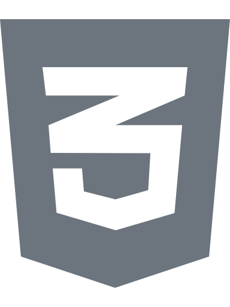
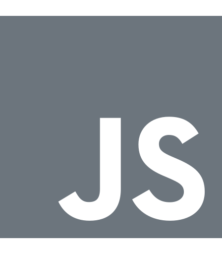
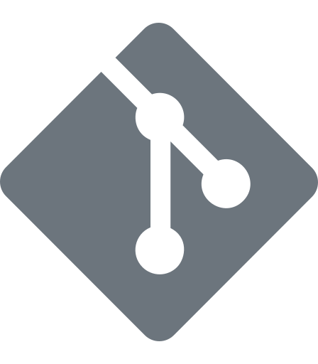

Samuel Amaro
Formosa Goias · Bosque II · samuel.dev.front@gmail.com
Olá! Meu nome e Samuel Amaro, sou formado em análise e desenvolvimento de Sistemas, pelo IFG localizado na cidade aonde resido, tenho 22 anos, atualmente estou desempregado buscando uma oportunidade profissional na areá de desenvolvimento web para atuar como estagiário ou desenvolvedor júnior Front-End. Sou proativo, determinado, focado, gosto de resolver problemas usando as minhas habilidades, lido bem com ambientes sobre pressão, aplico gerenciamento de tempo nas minhas tarefas pessoais. Sinta-se a vontade para visualizar o meu currículo e minhas redes logo abaixo.
Download currículoexperiência
Sem experiência profissional
desempregado atualmente
Em busca da primeira oportunidade profissional relacionada a areá de desenvolvimento web.
‐
educação
Instituto Federal de Goiás-Campus Formosa
Graduação - tecnologia
Superior de tecnologia em Análise e Desenvolvimento de Sistemas
‐
Skills
Linguagens de programação & ferramentas
- 
- 
- 
-

Workflow
- Mobile-First
- RWD
- OOP
- Markup Semantic
- BEM naming methodology
Interesses
Além de gostar de desenvolvimento web, gosto de praticar esporte ao ar livre, como ciclismo utilizando minha mountain bike. Durante a semana no período da noite, cerca de 2x participo de cultos evangélicos, sou cristão.
No meu tempo livre gosto de assistir futebol e acompanhar as notícias sobre o time. Além de dedicar um pouco aos estudos da música. E acompanhar noticias sobre o mundo da tecnologia.
Projetos
Site Android
Um site estático que descreve um pouco da história do (mascote) da android e sua criadora.
Componente QR Code
Solução de desafio de codificação Front-End, objetivo do desafio era construir um componente de código QR code.
Projeto TCC
Protejo de TCC, uma aplicação web cujo objetivo é resolver um problema pontual de distribuição de benefícios sociais durante a pandemia do (COVID-19), para as pessoas com menos condição financeira na cidade onde resido.
NFT Preview card component
Solução de desafio de codificação Front-End, objetivo do desafio era construir um cartão componente NFT com pre-visualização.
Component card order summary
Solução de desafio de codificação Front-End, objetivo do desafio era construir um componente de cartão de resumo de pedido.
Profile card component
Solução de desafio de codificação Front-End, objetivo do desafio era construir um componente de cartão de perfil de usuário com estatísticas sobre rede social.
Stats preview card component
Solução de desafio de codificação Front-End, objetivo do desafio era construir um componente de cartão com visualização de estatísticas.
3 Column preview card component
Solução de desafio de codificação Front-End, objetivo do desafio era construir um componente de visualização de 3 colunas.
Single Price grid component
Solução de desafio de codificação Front-End, objetivo do desafio era construir um componente de grade de preço único.

Testimonials section grid
Solução de desafio de codificação Front-End, objetivo do desafio era construir uma página com uma seção de grade de depoimentos.
Huddle landing-page with introductory section
Solução de desafio de codificação Front-End, objetivo do desafio era construir uma landing-page sobre comunidades com uma seção de introdução
Four card feature section
Solução de desafio de codificação Front-End, objetivo do desafio era construir uma seção de recursos de quatro cartões.
Section proof social
Solução de desafio de codificação Front-End, objetivo do desafio era construir uma seção de prova social com feedbacks.
Landing-Page Clipboard
Solução de desafio de codificação Front-End, objetivo do desafio era construir uma landing-page com uma área de transferência.
Landing-Page Huddle with alternating feature blocks
Solução de desafio de codificação Front-End, objetivo do desafio era construir uma landing-page huddle com uma seção de blocos de recursos alternados.
Component data storage fylo
Solução de desafio de codificação Front-End, objetivo do desafio era construir um componente de armazenando de dados fylo.
Fylo landing page with two column layout
Solução de desafio de codificação Front-End, objetivo do desafio era construir uma landing-page fylo com layout de duas colunas.
Componente article preview
Solução de desafio de codificação Front-End, objetivo do desafio era construir um componente de visualização de artigo com button de compartilhar.